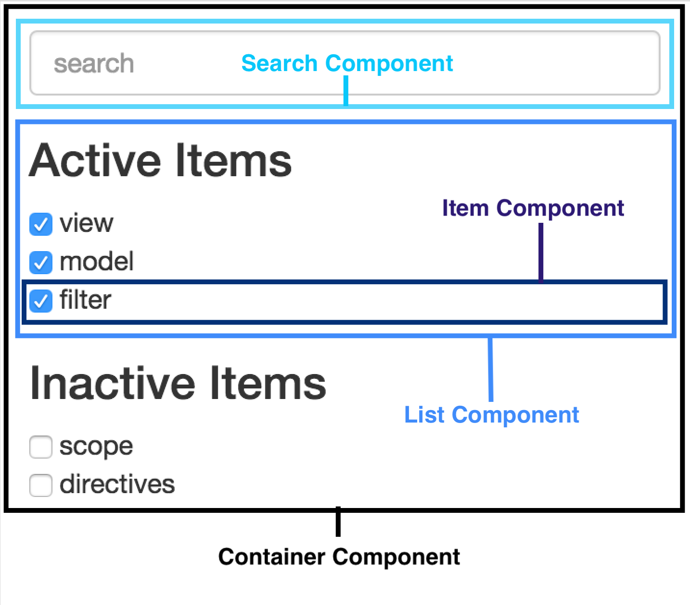

Building a better Element
A PostBeyond tech talk
What's Up?
- Structuring a front-end application
- Comparing Applications: Client & Element
- Unit Testing
- Internal Style Guide
Building up your front end
Step one: Everything is a component
But why?
- Reusable
- Testable
- Clearly separated interests
- Everything has it's job
- Easier to organize code
Your world in components
Your world in components

But what IS a component?
A part or element of a larger whole
Essentially
//This
<a href="postbeyond.com">Anchor
//Or This
<video src="img/postbeyond.com/amazingVideo">
//Or Even This
<input type="number"/>
Basically
A reusable piece of markup that's has code and styling attached to it to perform
But more practically . . .
Even MORE practically
Relative SuedoCode (but not very)
//Which contains
//Which contains
Components of a PB Component
- Markup (a template)
- post.tmpl.html
- Associated code (a controller)
- post.js
- Associated styling (css)
- post.less
- Unit Test
- post.test.js
- Functional Test (Protractor test)
- post.e2e.test.js
In Practice
Which brings us to . . .
Client vs Element
- Controllers vs Directives
- Giant multipurpose files vs Contained Focus
- Universal Stylesheets vs
- and . . .
Unit Testing?
Client Folder Structure
And Still . . .
Element last week
Now
Testing the Units
- Karma & Jasmine
- PhantomJS
- Istanbul
- Protractor
Karma & Jasmine
beforeEach(
inject(function($templateCache, _$compile_, _$rootScope_, $httpBackend) {
$compile = _$compile_;
$scope = _$rootScope_;
backend = $httpBackend;
$httpBackend.when("GET", "http://app.postbeyond.dev/api/v1/category").respond(mockResults);
$scope.stubFunction = stubFunction;
element = $compile('
Protractor
var auth;
auth = require("../../../auth.e2e.spec.js");
describe('PostBeyond leaderboard page', function() {
beforeAll(function() {
auth.login();
});
it('should run a test', function() {
expect(1 + 1).toBe(2);
});
it('should bring up leaderboard', function() {
element(By.css('.ui.secondary.menu.controls .item')).click().then(function() {
expect(browser.getCurrentUrl()).toEqual('http://app.postbeyond.dev/atom/#/leaderboard');
});
});
afterAll(function() {
auth.logout();
});
});
Karma & Jasmine
[19:18:13] Using gulpfile ~/Documents/postbeyond-element/Gulpfile.js
[19:18:13] Starting 'unit'...
09 02 2017 19:18:14.421:INFO [karma]: Karma v1.3.0 server started at http://localhost:9876/
09 02 2017 19:18:14.423:INFO [launcher]: Launching browser PhantomJS with unlimited concurrency
09 02 2017 19:18:14.430:INFO [launcher]: Starting browser PhantomJS
09 02 2017 19:18:15.455:INFO [PhantomJS 2.1.1 (Mac OS X 0.0.0)]: Connected on socket /#dIE3XUi1N6gE_EZBAAAA with id 64267632
PhantomJS 2.1.1 (Mac OS X 0.0.0): Executed 6 of 6 SUCCESS (0.02 secs / 0.122 secs)
Istanbul
DEMO!
Style Guide
- Strongly fuelled by Hunter's opinions/experience
- Many of these practices are industry standard
- Will help us stay aligned
- Will continue to grow
Find it!
On confluence under tech documents
Also find the less style guide that @victorMak has goin' on
 Questions?
Questions?